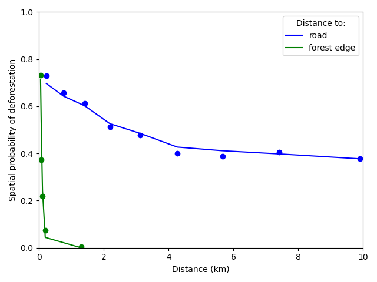
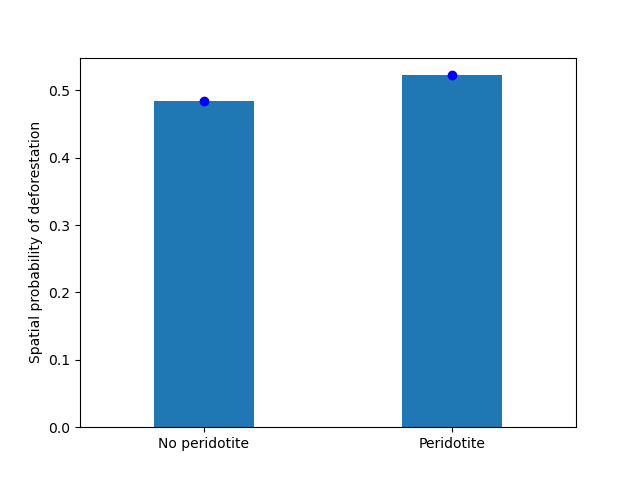

New Caledonia¶
{kind=link}
Introduction¶
This notebook presents the approach used to model and forecast deforestation in New Caledonia.
The approach is based on a methodology described in the following article:
Vieilledent G., C. Vancutsem, and F. Achard. Forest refuge areas and carbon emissions from tropical deforestation in the 21stcentury.
More information on the method can be find at the ForestAtRisk website: https://forestatrisk.cirad.fr.
Importing Python modules¶
We import the Python modules needed for running the analysis.
# Imports
import os
import pkg_resources
import re
from shutil import copy2
import sys
from dotenv import load_dotenv
import ee
import numpy as np
import matplotlib.pyplot as plt
import pandas as pd
from patsy import dmatrices
import pickle
from sklearn.linear_model import LogisticRegression
from sklearn.ensemble import RandomForestClassifier
from sklearn.metrics import log_loss
from tabulate import tabulate
from pywdpa import get_token
import forestatrisk as far
# forestatrisk: modelling and forecasting deforestation in the tropics.
# https://ecology.ghislainv.fr/forestatrisk/
We create some directories to hold the data and the ouputs with the
function far.make_dir().
far.make_dir("data_raw")
far.make_dir("data")
far.make_dir("output")
We increase the cache for GDAL to increase computational speed.
# GDAL
os.environ["GDAL_CACHEMAX"] = "1024"
Set credentials¶
We need to configure and set credentials for:
Google Earth Engine (GEE) API
RClone to access Google Drive
WDPA API
You will need a Google account for using the GEE API and accessing Google Drive.
Access to Google Earth Engine API¶
Google Earth Engine is used to compute the past forest cover change
from Vancutsem et al. 2021 or Hansen et al. 2013. To get credentials
for using the Google Earth Engine API, follow these
instructions. While authentication with ee.Authenticate() should be
necessary only once, you have to execute the command ee.Initialize()
at each session.
# Uncomment to authenticate for the first time.
# ee.Authenticate()
ee.Initialize()
Under Linux and Mac, credentials are stored in
$HOME/.config/earthengine/credentials.
cat $HOME/.config/earthengine/credentials
Access to Google Drive with RClone¶
RClone is used to download the forest cover change raster locally from Google Drive. To install RClone, follow these instructions for RClone. To configure the access to your Google Drive, follow these instructions for accessing Google Drive.
Access to WDPA API¶
We will be using the pywda Python package to collect the data on
protected areas from the World Database on Protected Areas (WDPA) at
https://www.protectedplanet.net. To access the Protected Planet API,
you must first obtain a Personal API Token by filling in the form
available at https://api.protectedplanet.net/request. Then you need to
set an environment variable (we recommend using the name WDPA_KEY)
using either the command os.environ["WDPA_KEY"]="your_token" or
python-dotenv.
The validity of your token can be checked with the function
pywdpa.get_token().
# WDPA API
load_dotenv(".env")
get_token()
If your token is valid, the function will return its value. Otherwise it will print an error message.
Data¶
Compute forest cover change¶
We specify the iso3 code of New Caledonia which is “NCL”.
iso3 = "NCL"
We compute the past forest cover change from Vancutsem et al. 2021
using Google Earth Engine. The argument gdrive_remote_rclone of the
function far.data.country_forest_run() specifies the name of the
Google Drive remote for rclone. The argument gdrive_folder specifies
the name of the Google Drive folder to use.
# Compute gee forest data
far.data.country_forest_run(
iso3, proj="EPSG:4326",
output_dir="data_raw",
keep_dir=True,
fcc_source="jrc", perc=50,
gdrive_remote_rclone="gdrive_gv",
gdrive_folder="GEE-forestatrisk-notebooks")
Download raw data¶
# Download data
far.data.country_download(
iso3,
gdrive_remote_rclone="gdrive_gv",
gdrive_folder="GEE-forestatrisk-notebooks",
output_dir="data_raw")
Downloading data for country NCL
Compute explanatory variables¶
We first set the projection for New-Caledonia which is RGNC91-93 / Lambert New Caledonia (EPSG:3163).
# Projection
proj = "EPSG:3163"
We compute the explanatory variables from the raw data.
# Compute variables
far.data.country_compute(
iso3,
temp_dir="data_raw",
output_dir="data",
proj=proj,
data_country=True,
data_forest=True,
keep_temp_dir=True)
Adding data on ultramafic soils¶
Data can be downloaded from Géorep. We unzip the shapefile in the
folder gisdata/vectors/peridotite/, reproject, and rasterize the
data at 30m.
proj="EPSG:3163"
f1="gisdata/vectors/peridotite/2de32d40-dc86-4bd9-9b83-420699bc672e2020413-1-13dmpoq.2hll.shp"
f2="gisdata/vectors/peridotite/geol_proj.shp"
ogr2ogr -overwrite -s_srs EPSG:4326 -t_srs $proj -f 'ESRI Shapefile' \
-lco ENCODING=UTF-8 $f2 $f1
We rasterize the polygon file using value 1 when on ultramafic soils
and 0 when not. Extent is obtained from file pa.tif with command
gdalinfo.
gdalinfo data/pa.tif
Driver: GTiff/GeoTIFF
Files: data/pa.tif
Size is 14296, 12541
Coordinate System is:
PROJCRS["RGNC91-93 / Lambert New Caledonia",
BASEGEOGCRS["RGNC91-93",
DATUM["Reseau Geodesique de Nouvelle Caledonie 91-93",
ELLIPSOID["GRS 1980",6378137,298.257222101,
LENGTHUNIT["metre",1]]],
PRIMEM["Greenwich",0,
ANGLEUNIT["degree",0.0174532925199433]],
ID["EPSG",4749]],
CONVERSION["Lambert New Caledonia",
METHOD["Lambert Conic Conformal (2SP)",
ID["EPSG",9802]],
PARAMETER["Latitude of false origin",-21.5,
ANGLEUNIT["degree",0.0174532925199433],
ID["EPSG",8821]],
PARAMETER["Longitude of false origin",166,
ANGLEUNIT["degree",0.0174532925199433],
ID["EPSG",8822]],
PARAMETER["Latitude of 1st standard parallel",-20.6666666666667,
ANGLEUNIT["degree",0.0174532925199433],
ID["EPSG",8823]],
PARAMETER["Latitude of 2nd standard parallel",-22.3333333333333,
ANGLEUNIT["degree",0.0174532925199433],
ID["EPSG",8824]],
PARAMETER["Easting at false origin",400000,
LENGTHUNIT["metre",1],
ID["EPSG",8826]],
PARAMETER["Northing at false origin",300000,
LENGTHUNIT["metre",1],
ID["EPSG",8827]]],
CS[Cartesian,2],
AXIS["easting (X)",east,
ORDER[1],
LENGTHUNIT["metre",1]],
AXIS["northing (Y)",north,
ORDER[2],
LENGTHUNIT["metre",1]],
USAGE[
SCOPE["Engineering survey, topographic mapping."],
AREA["New Caledonia - Belep, Grande Terre, Ile des Pins, Loyalty Islands (Lifou, Mare, Ouvea)."],
BBOX[-22.73,163.54,-19.5,168.19]],
ID["EPSG",3163]]
Data axis to CRS axis mapping: 1,2
Origin = (139830.000000000000000,521700.000000000000000)
Pixel Size = (30.000000000000000,-30.000000000000000)
Metadata:
AREA_OR_POINT=Area
Image Structure Metadata:
COMPRESSION=LZW
INTERLEAVE=BAND
Corner Coordinates:
Upper Left ( 139830.000, 521700.000) (163d31'22.97"E, 19d28'44.64"S)
Lower Left ( 139830.000, 145470.000) (163d27'53.88"E, 22d52'35.34"S)
Upper Right ( 568710.000, 521700.000) (167d36'22.62"E, 19d29'23.46"S)
Lower Right ( 568710.000, 145470.000) (167d38'38.23"E, 22d53'15.07"S)
Center ( 354270.000, 333585.000) (165d33'34.36"E, 21d11'45.81"S)
Band 1 Block=14296x1 Type=Byte, ColorInterp=Gray
NoData Value=255
proj="EPSG:3163"
f2="gisdata/vectors/peridotite/geol_proj.shp"
f3="data/geol.tif"
gdal_rasterize -te 139830 145470 568710 521700 -tap -burn 1 \
-co "COMPRESS=LZW" -co "PREDICTOR=2" -co "BIGTIFF=YES" \
-init 0 \
-a_nodata 255 -a_srs "$proj" \
-ot Byte -tr 30 30 -l geol_proj $f2 $f3
Files¶
The data folder includes:
Forest cover change data for the period 2010-2020 as a GeoTiff raster file (
data/fcc23.tif).Spatial explanatory variables as GeoTiff raster files (
.tifextension, eg.data/dist_edge.tiffor distance to forest edge).Additional folders:
forest,forecast, andemissions, with forest cover change for different periods of time, explanatory variables at different dates used for projections in the future, and forest carbon data for computing carbon emissions.
# Plot forest
fig_fcc23 = far.plot.fcc(
input_fcc_raster="data/fcc23.tif",
maxpixels=1e8,
output_file="output/fcc23.png",
borders="data/aoi_proj.shp",
linewidth=0.3, dpi=500)
Build overview
Variable characteristics are summarized in the following table:
Product |
Source |
Variable |
Unit |
Resolution (m) |
|---|---|---|---|---|
Forest maps (2000-2010-2020) |
Vancutsem et al. 2021 |
distance to forest edge |
m |
30 |
distance to past deforestation |
m |
30 |
||
Digital Elevation Model |
SRTM v4.1 CSI-CGIAR |
altitude |
m |
90 |
slope |
degree |
90 |
||
Highways |
OSM-Geofabrik |
distance to roads |
m |
150 |
Places |
distance to towns |
m |
150 |
|
Waterways |
distance to river |
m |
150 |
|
Protected areas |
WDPA |
protected area presence |
– |
30 |
Geology |
Géorep 1/50.000 |
peridotite bed presence |
– |
30 |
Sampling¶
Sampling the observations¶
# Sample points
dataset = far.sample(nsamp=10000, adapt=True, seed=1234, csize=10,
var_dir="data",
input_forest_raster="fcc23.tif",
output_file="output/sample.txt",
blk_rows=0)
# Import data as pandas DataFrame if necessary
# dataset = pd.read_table("output/sample.txt", delimiter=",")
# Remove NA from data-set (otherwise scale() and
# model_binomial_iCAR doesn't work)
dataset = dataset.dropna(axis=0)
# Set number of trials to one for far.model_binomial_iCAR()
dataset["trial"] = 1
# Print the first five rows
print(dataset.head(5))
altitude dist_defor dist_edge dist_river dist_road dist_town fcc23 geol pa slope X Y cell trial
1 56.0 120.0 30.0 91747.0 19945.0 19860.0 0.0 1.0 1.0 10.0 145545.0 514875.0 0.0 1
2 35.0 162.0 30.0 89177.0 17328.0 17242.0 0.0 1.0 1.0 4.0 146595.0 512475.0 0.0 1
3 70.0 509.0 42.0 88256.0 16508.0 16417.0 0.0 1.0 1.0 11.0 147315.0 511875.0 0.0 1
4 74.0 488.0 60.0 90900.0 18870.0 18795.0 0.0 1.0 0.0 15.0 145095.0 513525.0 0.0 1
5 66.0 210.0 67.0 89386.0 17522.0 17437.0 0.0 1.0 1.0 13.0 146445.0 512685.0 0.0 1
# Sample size
ndefor = sum(dataset.fcc23 == 0)
nfor = sum(dataset.fcc23 == 1)
with open("output/sample_size.csv", "w") as f:
f.write("var, n\n")
f.write("ndefor, " + str(ndefor) + "\n")
f.write("nfor, " + str(nfor) + "\n")
print("ndefor = {}, nfor = {}".format(ndefor, nfor))
ndefor = 9933, nfor = 9977
Correlation plots¶
# Correlation formula
formula_corr = "fcc23 ~ dist_road + dist_town + dist_river + \
dist_defor + dist_edge + altitude + slope - 1"
# Output file
of = "output/correlation.pdf"
# Data
y, data = dmatrices(formula_corr, data=dataset,
return_type="dataframe")
# Plots
figs = far.plot.correlation(
y=y, data=data,
plots_per_page=3,
figsize=(7, 8),
dpi=80,
output_file=of)
Model¶
Model preparation¶
# Neighborhood for spatial-autocorrelation
nneigh, adj = far.cellneigh(raster="data/fcc23.tif", csize=10, rank=1)
# List of variables
variables = ["C(pa)", "C(geol)", "scale(altitude)", "scale(slope)",
"scale(dist_defor)", "scale(dist_edge)", "scale(dist_road)",
"scale(dist_town)", "scale(dist_river)"]
# Transform into numpy array
variables = np.array(variables)
# Starting values
beta_start = -99 # Simple GLM estimates
# Priors
priorVrho = -1 # -1="1/Gamma"
Variable selection¶
# Formula
right_part = " + ".join(variables) + " + cell"
left_part = "I(1-fcc23) + trial ~ "
formula = left_part + right_part
# Model
mod_binomial_iCAR = far.model_binomial_iCAR(
# Observations
suitability_formula=formula, data=dataset,
# Spatial structure
n_neighbors=nneigh, neighbors=adj,
# Priors
priorVrho=priorVrho,
# Chains
burnin=1000, mcmc=1000, thin=1,
# Starting values
beta_start=beta_start)
We check the parameter values.
mod_binomial_iCAR
Binomial logistic regression with iCAR process
Model: I(1 - fcc23) + trial ~ 1 + C(pa) + C(geol) + scale(altitude) + scale(slope) + scale(dist_defor) + scale(dist_edge) + scale(dist_road) + scale(dist_town) + scale(dist_river) + cell
Posteriors:
Mean Std CI_low CI_high
Intercept -1.88 0.117 -2.13 -1.65
C(pa)[T.1.0] 0.0479 0.0814 -0.111 0.212
C(geol)[T.1.0] 0.358 0.0683 0.222 0.484
scale(altitude) -0.253 0.0301 -0.316 -0.196
scale(slope) -0.114 0.0258 -0.164 -0.065
scale(dist_defor) -0.827 0.0433 -0.92 -0.745
scale(dist_edge) -6.03 0.216 -6.46 -5.63
scale(dist_road) -0.111 0.0402 -0.183 -0.0193
scale(dist_town) -0.121 0.0281 -0.18 -0.0713
scale(dist_river) -0.0556 0.129 -0.298 0.16
Vrho 2.92 0.315 2.34 3.59
Deviance 1.61e+04 22.1 1.61e+04 1.62e+04
Final model¶
We remove the protected areas and the distance to river from the list of explanatory variables as their effects seem not to be significant.
# Formula
variables = ["C(geol)", "scale(altitude)", "scale(slope)",
"scale(dist_defor)", "scale(dist_edge)", "scale(dist_road)",
"scale(dist_town)"]
right_part = " + ".join(variables) + " + cell"
left_part = "I(1-fcc23) + trial ~ "
formula = left_part + right_part
# Re-run the model with longer MCMC and estimated initial values
mod_binomial_iCAR = far.model_binomial_iCAR(
# Observations
suitability_formula=formula, data=dataset,
# Spatial structure
n_neighbors=nneigh, neighbors=adj,
# Priors
priorVrho=priorVrho,
# Chains
burnin=5000, mcmc=5000, thin=5,
# Starting values
beta_start=mod_binomial_iCAR.betas)
We can plot the traces of the MCMCs.
# Plot
figs = mod_binomial_iCAR.plot(
output_file="output/mcmc.pdf",plots_per_page=3,
figsize=(10, 6),
dpi=80)
We save the model using pickle.
# Save model's main specifications with pickle
mod_icar_pickle = {
"formula": mod_binomial_iCAR.suitability_formula,
"rho": mod_binomial_iCAR.rho,
"betas": mod_binomial_iCAR.betas,
"Vrho": mod_binomial_iCAR.Vrho,
"deviance": mod_binomial_iCAR.deviance}
with open("output/mod_icar.pickle", "wb") as pickle_file:
pickle.dump(mod_icar_pickle, pickle_file)
We get model’s predictions.
# Predictions
pred_icar = mod_binomial_iCAR.theta_pred
Model comparison and validation¶
Cross-validation¶
# Cross-validation for icar, glm and RF
CV_df_icar = far.cross_validation(
dataset, formula, mod_type="icar", ratio=30, nrep=5,
icar_args={"n_neighbors": nneigh, "neighbors": adj,
"burnin": 1000, "mcmc": 1000, "thin": 1,
"beta_start": mod_binomial_iCAR.betas})
CV_df_glm = far.cross_validation(dataset, formula, mod_type="glm", ratio=30, nrep=5)
CV_df_rf = far.cross_validation(dataset, formula, mod_type="rf", ratio=30, nrep=5,
rf_args={"n_estimators": 500, "n_jobs": 3})
# Save result to disk
CV_df_icar.to_csv("output/CV_icar.csv", header=True, index=False)
CV_df_glm.to_csv("output/CV_glm.csv", header=True, index=False)
CV_df_rf.to_csv("output/CV_rf.csv", header=True, index=False)
print(CV_df_icar)
index rep1 rep2 rep3 rep4 rep5 mean
0 AUC 0.8817 0.8854 0.8856 0.8916 0.8901 0.8869
1 OA 0.8024 0.8048 0.8041 0.8135 0.8091 0.8068
2 EA 0.5000 0.5001 0.5000 0.5001 0.5000 0.5001
3 FOM 0.6701 0.6689 0.6732 0.6895 0.6808 0.6765
4 Sen 0.8025 0.8016 0.8047 0.8162 0.8101 0.8070
5 Spe 0.8024 0.8078 0.8036 0.8107 0.8082 0.8065
6 TSS 0.6049 0.6095 0.6082 0.6269 0.6183 0.6136
7 K 0.6049 0.6095 0.6082 0.6269 0.6183 0.6136
print(CV_df_glm)
index rep1 rep2 rep3 rep4 rep5 mean
0 AUC 0.8512 0.8584 0.8524 0.8612 0.8582 0.8563
1 OA 0.7706 0.7783 0.7683 0.7787 0.7757 0.7743
2 EA 0.5000 0.5001 0.5000 0.5001 0.5000 0.5001
3 FOM 0.6269 0.6323 0.6246 0.6419 0.6350 0.6322
4 Sen 0.7707 0.7748 0.7689 0.7819 0.7767 0.7746
5 Spe 0.7706 0.7818 0.7676 0.7753 0.7746 0.7740
6 TSS 0.5413 0.5566 0.5366 0.5572 0.5513 0.5486
7 K 0.5413 0.5566 0.5366 0.5572 0.5513 0.5486
print(CV_df_rf)
index rep1 rep2 rep3 rep4 rep5 mean
0 AUC 0.8720 0.8761 0.8849 0.8818 0.8709 0.8771
1 OA 0.7901 0.7949 0.8009 0.8011 0.7911 0.7956
2 EA 0.5000 0.5002 0.5001 0.5000 0.5000 0.5000
3 FOM 0.6527 0.6542 0.6708 0.6696 0.6535 0.6602
4 Sen 0.7907 0.7911 0.8034 0.8029 0.7905 0.7957
5 Spe 0.7894 0.7986 0.7984 0.7993 0.7917 0.7955
6 TSS 0.5801 0.5897 0.6018 0.6022 0.5821 0.5912
7 K 0.5801 0.5897 0.6018 0.6022 0.5821 0.5912
The “icar” model has the best accuracy indices for the cross-validation.
Deviance¶
# Null model
formula_null = "I(1-fcc23) ~ 1"
y, x = dmatrices(formula_null, data=dataset, NA_action="drop")
Y = y[:, 0]
X_null = x[:, :]
mod_null = LogisticRegression(solver="lbfgs")
mod_null = mod_null.fit(X_null, Y)
pred_null = mod_null.predict_proba(X_null)
# Simple glm with no spatial random effects
formula_glm = formula
y, x = dmatrices(formula_glm, data=dataset, NA_action="drop")
Y = y[:, 0]
X_glm = x[:, :-1] # We remove the last column (cells)
mod_glm = LogisticRegression(solver="lbfgs")
mod_glm = mod_glm.fit(X_glm, Y)
pred_glm = mod_glm.predict_proba(X_glm)
# Random forest model
formula_rf = formula
y, x = dmatrices(formula_rf, data=dataset, NA_action="drop")
Y = y[:, 0]
X_rf = x[:, :-1] # We remove the last column (cells)
mod_rf = RandomForestClassifier(n_estimators=500, n_jobs=3)
mod_rf = mod_rf.fit(X_rf, Y)
pred_rf = mod_rf.predict_proba(X_rf)
# Deviances
deviance_null = 2*log_loss(Y, pred_null, normalize=False)
deviance_glm = 2*log_loss(Y, pred_glm, normalize=False)
deviance_rf = 2*log_loss(Y, pred_rf, normalize=False)
deviance_icar = mod_binomial_iCAR.deviance
deviance_full = 0
dev = [deviance_null, deviance_glm, deviance_rf, deviance_icar, deviance_full]
# Result table
mod_dev = pd.DataFrame({"model": ["null", "glm", "rf", "icar", "full"],
"deviance": dev})
perc = 100*(1-mod_dev.deviance/deviance_null)
mod_dev["perc"] = perc
mod_dev = mod_dev.round(0)
mod_dev.to_csv("output/model_deviance.csv", header=True, index=False)
print(mod_dev)
model deviance perc
0 null 27600.0 0.0
1 glm 18301.0 34.0
2 rf 4385.0 84.0
3 icar 16109.0 42.0
4 full 0.0 100.0
While the “rf” had lower accuracy indices than the “icar” model for the cross-validation, the “rf” model explains 84% of the deviance against 42% for the “icar” model. This shows clearly that the “rf” model overfits the data. Moreover, the “glm” explains only 34% of the deviance. This means that fixed variables included in the model only explain a part of the spatial variability in the deforestation process and that adding spatial random effects allow to structure a significant part of the residual variability (8%). We thus use the “icar” model to predict the spatial location of the deforestation in the future.
# Save models' predictions
obs_pred = dataset
obs_pred["null"] = pred_null[:, 1]
obs_pred["glm"] = pred_glm[:, 1]
obs_pred["rf"] = pred_rf[:, 1]
obs_pred["icar"] = pred_icar
obs_pred.to_csv("output/obs_pred.csv", header=True, index=False)
Variables’ effects¶
Model’s coefficients¶
# Summary
print(mod_binomial_iCAR)
# Write summary in file
with open("output/summary_hSDM.txt", "w") as f:
f.write(str(mod_binomial_iCAR))
Binomial logistic regression with iCAR process
Model: I(1 - fcc23) + trial ~ 1 + C(geol) + scale(altitude) + scale(slope) + scale(dist_defor) + scale(dist_edge) + scale(dist_road) + scale(dist_town) + cell
Posteriors:
Mean Std CI_low CI_high
Intercept -1.85 0.183 -2.18 -1.45
C(geol)[T.1.0] 0.349 0.0758 0.194 0.489
scale(altitude) -0.258 0.0343 -0.324 -0.187
scale(slope) -0.108 0.0265 -0.158 -0.0585
scale(dist_defor) -0.822 0.0453 -0.909 -0.739
scale(dist_edge) -6.11 0.187 -6.47 -5.78
scale(dist_road) -0.106 0.0446 -0.202 -0.0246
scale(dist_town) -0.13 0.0474 -0.221 -0.0372
Vrho 2.91 0.364 2.23 3.63
Deviance 1.61e+04 22.6 1.61e+04 1.62e+04
Results show that deforestation probability is significantly higher for forest located on ultramafic soils. This can be explained considering different hypothesis. First, mines are located on ultramafic soils so it could be that deforestation is higher on this soil type because of mining activities and mine extensions. Second, it could be that the vegetation on ultramafic soil is more susceptible to fires. Third, a confounding factor (correlated to ultramafic soils), could explain the higher deforestation probability on this soil type. It could be that human activities inducing deforestation (agriculture, pasture) are more developed in the southern part of New-Caledonia, where the ultramafic soils are more present.
Effect of the distances to road and forest edge¶
We define an inverse-logit function.
# Inverse-logit function
def inv_logit(p):
if p > 0:
return 1. / (1. + np.exp(-p))
elif p <= 0:
return np.exp(p) / (1 + np.exp(p))
else:
raise ValueError
# Variable transformation
sd_road = np.std(dataset["dist_road"]) # dist in meter
# Effect of roads at decreasing deforestation probability
alpha_normalized = -1.85
coef_road_km = -0.106*1000/sd_road # Back-transformed parameter to have slope in km^-1
theta_mean = inv_logit(alpha_normalized) # Mean deforestation probability
theta_road_1km = inv_logit(alpha_normalized + coef_road_km)
d_road_1km = 100*round(1-(theta_road_1km/theta_mean), 2)
theta_road_10km = inv_logit(alpha_normalized + coef_road_km*10)
d_road_10km = 100*round(1-(theta_road_10km/theta_mean), 2)
# Print results
print("d_road_1km: {}%".format(d_road_1km))
print("d_road_10km: {}%".format(d_road_10km))
d_road_1km: 2.0%
d_road_10km: 18.0%
On average, a distance of 10 km from a road reduces the risk of deforestation by 18%.
# Variable transformation
sd_edge = np.std(dataset["dist_edge"]) # dist in meter
## Effect of edges at decreasing deforestation probability
alpha_normalized = -1.85
coef_edge_km = -6.11*1000/sd_edge # Back-transformed parameter to have slope in km^-1
theta_mean = inv_logit(alpha_normalized) # Mean deforestation probability
theta_edge_100m = inv_logit(alpha_normalized + coef_edge_km*0.1)
d_edge_100m = 100*round(1-(theta_edge_100m/theta_mean), 2)
theta_edge_1km = inv_logit(alpha_normalized + coef_edge_km*1)
d_edge_1km = 100*round(1-(theta_edge_1km/theta_mean), 2)
# Print results
print("d_edge_100m: {}%".format(d_edge_100m))
print("d_edge_1km: {}%".format(d_edge_10km))
d_edge_100m: 95.0%
d_edge_1km: 100.0%
On average, a distance of 100 m from the forest edge reduces the risk of deforestation by 95%, and a distance of 1 km reduces the risk of deforestation by almost 100%.
# Load data
df = pd.read_csv("output/obs_pred.csv")
# Percentiles
perc = np.arange(0, 110, 10)
nperc = len(perc)
# Result table with local means for each variable
theta_lmean = []
# Compute theta and se by bins
y = 1-df["fcc23"] # Transform: defor=1, forest=0
df["dist_road_km"] = df["dist_road"]/1000
df["dist_edge_km"] = df["dist_edge"]/1000
varname = ["dist_road_km", "dist_edge_km"]
# Loop on variables
for i in range(len(varname)):
v = varname[i]
theta = np.zeros(nperc - 1)
se = np.zeros(nperc - 1)
x = np.zeros(nperc - 1)
quantiles = np.nanpercentile(df[v], q=perc)
# Model icar
theta_icar = df["icar"]
theta_icar_mean = np.zeros(nperc - 1)
# Compute theta and se by bins
for j in range(nperc - 1):
inf = quantiles[j]
sup = quantiles[j + 1]
x[j] = inf + (sup - inf) / 2
# Observations in bin
w = (df[v] >= inf) & (df[v] < sup)
if j == (nperc-1):
w = (df[v] >= inf) & (df[v] <= sup)
y_bin = y[w]
y_bin = np.array(y_bin) # Transform into np.array to compute sum
# Local mean and se
s = float(sum(y_bin == 1)) # success
n = len(y_bin) # trials
if n != 0:
theta[j] = s / n
else:
theta[j] = np.nan
ph = (s + 1 / 2) / (n + 1)
se[j] = np.sqrt(ph * (1 - ph) / (n + 1))
# icar
t_bin = theta_icar[w]
theta_icar_mean[j] = np.mean(t_bin)
# Fill the list
df_out = pd.DataFrame({"x": x,
"theta_obs": theta,
"theta_icar": theta_icar_mean})
theta_lmean.append(df_out)
# DataFrame per variable
theta_road = theta_lmean[0]
theta_edge = theta_lmean[1]
print(theta_road)
print(theta_edge)
x theta_obs theta_icar
0 0.2250 0.729167 0.696619
1 0.7555 0.656746 0.643098
2 1.4085 0.613300 0.602317
3 2.1880 0.512024 0.526354
4 3.1240 0.477354 0.485228
5 4.2660 0.399504 0.427308
6 5.6725 0.388749 0.411547
7 7.4185 0.404726 0.398200
8 9.9100 0.377444 0.377488
9 25.5895 0.434673 0.423524
x theta_obs theta_icar
0 0.0300 NaN NaN
1 0.0300 NaN NaN
2 0.0300 NaN NaN
3 0.0300 NaN NaN
4 0.0300 NaN NaN
5 0.0450 0.731802 0.714871
6 0.0725 0.372052 0.467960
7 0.1045 0.218834 0.244265
8 0.1900 0.075294 0.044097
9 1.2955 0.003497 0.000133
# Plot relationships
ofile = "output/nb_newcal_dist_road_edge_effect.png"
fig = plt.figure()
ax = fig.add_subplot("111")
r1 = ax.plot(theta_road["x"], theta_road["theta_obs"], "bo")
r2 = ax.plot(theta_road["x"], theta_road["theta_icar"], "b", label="road")
f1 = ax.plot(theta_edge["x"], theta_edge["theta_obs"], "go")
f2 = ax.plot(theta_edge["x"], theta_edge["theta_icar"], "g", label="forest edge")
# Format plot
ax.legend(title="Distance to:")
ax.set_xlim(0, 10)
ax.set_ylim(0, 1)
ax.set_xlabel("Distance (km)")
ax.set_ylabel("Spatial probability of deforestation")
fig.tight_layout()
fig.savefig(ofile)
ofile
Figure 1: Effects of roads, and distance to forest edge on the spatial probability of deforestation The dots represent the local mean probability of deforestation for each bin of 10 percentiles for the distance. Lines represent the mean of the predicted probabilities of deforestation obtained from the deforestation model for all observations in each bin. (Note that for distance to forest edge, the first dot accounts for six bins while for distance to road, the bin for a distance > 10 km is not shown).
{kind=link}
Effect of ultramafic soils¶
# Change in deforestation probability on ultramafic soils
alpha_normalized = -1.85
coef_geol = 0.349
theta_mean = inv_logit(alpha_normalized) # Mean deforestation probability
theta_geol = inv_logit(alpha_normalized + coef_geol)
d_geol = 100*np.round((theta_geol/theta_mean)-1, 2)
print("d_geol: {}%".format(d_geol))
d_geol: 34.0%
On average, being on ultramafic soils increases the deforestation probability by 34%.
df_out = pd.DataFrame({"x": [0, 1],
"theta_obs": np.zeros(2),
"theta_icar": np.zeros(2)})
w0 = (df["geol"]==0); w1 = (df["geol"]==1)
df_out.loc[df_out["x"]==0, "theta_obs"] = sum(y[w0]==1)/len(y[w0])
df_out.loc[df_out["x"]==1, "theta_obs"] = sum(y[w1]==1)/len(y[w1])
df_out.loc[df_out["x"]==0, "theta_icar"] = np.mean(df.loc[w0, "icar"])
df_out.loc[df_out["x"]==1, "theta_icar"] = np.mean(df.loc[w1, "icar"])
print(df_out)
x theta_obs theta_icar
0 0 0.484320 0.484171
1 1 0.522406 0.522300
ofile = "output/nb_newcal_geol_effect.png"
fig = plt.figure()
ax = fig.add_subplot("111")
ax.plot(df_out["x"], df_out["theta_obs"], "bo")
ax.bar(df_out["x"], df_out["theta_icar"], width=0.4, tick_label=["No peridotite", "Peridotite"])
ax.set_xlim(-0.5, 1.5)
ax.set_ylabel("Spatial probability of deforestation")
fig.savefig(ofile)
ofile
Figure 2: Effects of the presence of peridotite beds on the spatial probability of deforestation The dots represent the observed mean probability of deforestation in each geological class, either without or with peridotite beds. Bars represent the mean of the predicted probabilities of deforestation obtained from the deforestation model for all observations in each class.
{kind=link}
Predictions¶
Interpolate spatial random effects¶
# Spatial random effects
rho = mod_binomial_iCAR.rho
# Interpolate
far.interpolate_rho(rho=rho, input_raster="data/fcc23.tif",
output_file="output/rho.tif",
csize_orig=10, csize_new=1)
Write spatial random effect data to disk
Compute statistics
Build overview
Resampling spatial random effects to file output/rho.tif
Predict deforestation probability¶
# Update dist_edge and dist_defor at t3
os.rename("data/dist_edge.tif", "data/dist_edge.tif.bak")
os.rename("data/dist_defor.tif", "data/dist_defor.tif.bak")
copy2("data/forecast/dist_edge_forecast.tif", "data/dist_edge.tif")
copy2("data/forecast/dist_defor_forecast.tif", "data/dist_defor.tif")
# Compute predictions
far.predict_raster_binomial_iCAR(
mod_binomial_iCAR, var_dir="data",
input_cell_raster="output/rho.tif",
input_forest_raster="data/forest/forest_t3.tif",
output_file="output/prob.tif",
blk_rows=10 # Reduced number of lines to avoid memory problems
)
# Reinitialize data
os.remove("data/dist_edge.tif")
os.remove("data/dist_defor.tif")
os.rename("data/dist_edge.tif.bak", "data/dist_edge.tif")
os.rename("data/dist_defor.tif.bak", "data/dist_defor.tif")
Project future forest cover change¶
# Forest cover
fc = list()
dates = ["t1", "2005", "t2", "2015", "t3"]
ndates = len(dates)
for i in range(ndates):
rast = "data/forest/forest_" + dates[i] + ".tif"
val = far.countpix(input_raster=rast, value=1)
fc.append(val["area"]) # area in ha
# Save results to disk
f = open("output/forest_cover.txt", "w")
for i in fc:
f.write(str(i) + "\n")
f.close()
# Annual deforestation
T = 10.0
annual_defor = (fc[2] - fc[4]) / T
# Dates and time intervals
dates_fut = ["2030", "2035", "2040", "2050", "2055", "2060", "2070", "2080", "2085", "2090", "2100"]
ndates_fut = len(dates_fut)
ti = [10, 15, 20, 30, 35, 40, 50, 60, 65, 70, 80]
# Loop on dates
for i in range(ndates_fut):
# Amount of deforestation (ha)
defor = np.rint(annual_defor * ti[i])
# Compute future forest cover
stats = far.deforest(
input_raster="output/prob.tif",
hectares=defor,
output_file="output/fcc_" + dates_fut[i] + ".tif",
blk_rows=128)
# Save some stats if date = 2050
if dates_fut[i] == "2050":
# Save stats to disk with pickle
pickle.dump(stats, open("output/stats.pickle", "wb"))
# Plot histograms of probabilities
fig_freq = far.plot.freq_prob(
stats, output_file="output/freq_prob.png")
plt.close(fig_freq)
Figures¶
Historical forest cover change¶
Forest cover change for the period 2000-2010-2020
# Plot forest
ofile = "output/nb_newcal_fcc123.png"
fig_fcc123 = far.plot.fcc123(
input_fcc_raster="data/forest/fcc123.tif",
maxpixels=1e8,
output_file=ofile,
borders="data/aoi_proj.shp",
linewidth=0.3,
figsize=(6, 5), dpi=500)
ofile
{kind=link}
Spatial random effects¶
# Original spatial random effects
ofile = "output/nb_newcal_rho_orig.png"
fig_rho_orig = far.plot.rho(
"output/rho_orig.tif",
borders="data/aoi_proj.shp",
linewidth=0.5,
output_file=ofile,
figsize=(9,5), dpi=80)
# Interpolated spatial random effects
ofile = "output/nb_newcal_rho.png"
fig_rho = far.plot.rho(
"output/rho.tif",
borders="data/aoi_proj.shp",
linewidth=0.5,
output_file=ofile,
figsize=(9,5), dpi=80)
ofile
{kind=link}
Spatial probability of deforestation¶
# Spatial probability of deforestation
ofile = "output/nb_newcal_prob.png"
fig_prob = far.plot.prob(
"output/prob.tif",
maxpixels=1e8,
borders="data/aoi_proj.shp",
linewidth=0.3,
legend=True,
output_file=ofile,
figsize=(6, 5), dpi=500)
ofile
{kind=link}
Future forest cover¶
ofile = "output/nb_newcal_fcc_2050.png"
# Projected forest cover change (2020-2050)
fcc_2050 = far.plot.fcc(
"output/fcc_2050.tif",
maxpixels=1e8,
borders="data/aoi_proj.shp",
linewidth=0.3,
output_file=ofile,
figsize=(6, 5), dpi=500)
ofile
{kind=link}
# Projected forest cover change (2020-2100)
ofile = "output/nb_newcal_fcc_2100.png"
fcc_2100 = far.plot.fcc(
"output/fcc_2100.tif",
maxpixels=1e8,
borders="data/aoi_proj.shp",
linewidth=0.3,
output_file=ofile,
figsize=(6, 5), dpi=500)
ofile
{kind=link}